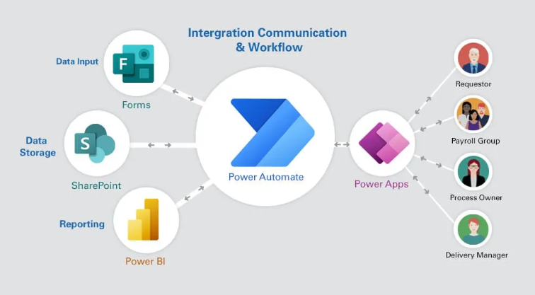
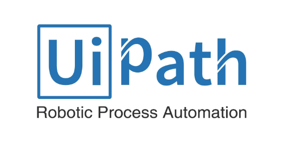

RPA in Manufacturing
RPA in Manufacturing
In today’s fast-paced manufacturing world, staying ahead of the curve is not just an advantage; it's a necessity. Robotic Process Automation (RPA) has emerged as a game-changer, transforming traditional manufacturing landscapes into hubs of efficiency and innovation.

Intelligent Document Processing (IDP)
Led the design and implementation of an enterprise-wide Intelligent Document Processing (AI/IDP) solution for a
leading financial services company aimed at automating the processing of semi-structured and unstructured
financial documents, including invoices, contracts, and customer identification documents.

SEO Automation
SEO Automation software is designed to boost SEO and increase website reach by automating content creation, management, and random click events. It generates relevant posts, organizes them with tags and keywords, and simulates user interactions to improve search engine visibility and engagement.
Bell Media: Inoice tracking system with 24/7 support
As the RPA Specialist leading one of Bell's invoice-tracking system AI automation projects, I was solely responsible for the end-to-end design, development, and implementation of a comprehensive workflow.

BI Dashboarding
Developed data models, designed interactive Power BI reports, and built dashboards to provide actionable
insights, closely collaborating with cross-functional teams to align with business needs. Utilized SQL, Power
BI, and Excel to optimize data pipelines, automate processes, ensure data accuracy, and enhance data-driven
decision-making across the organization.

Transforming Healthcare Operations with Microsoft Power Automate
Designed and implemented an automation framework using Microsoft Power Automate to streamline healthcare operations, optimize resource allocation, and enhance patient care by reducing inefficiencies and ensuring compliance with industry standards.

Electricity Board project(Confidential)
Handled POC, design, documentation, development,
deployment, Hypercare, and Handvore to the client which includes SDD, PDD, Handover Doct.
The project required the extraction of data from the client's website and comparing it to new
data, on that basis, certain tasks were performed with reusable meta-bots to whether user
connection will Offer/Reject/Further-Inspection.

Hooman Law project
Successfully delivered product to the US client with direct client
communication. In this project, the bot is able to extract data from the website and do certain
tasks based on client requirements which include AA360 Object recorder to manage and execute
windows controls as a background process in which the bot fetches the data and automated
the process to arrange the data.